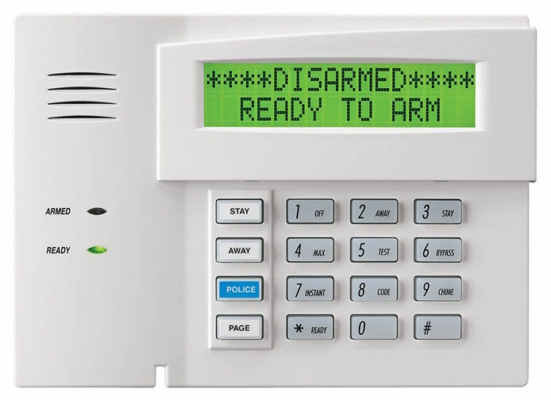

Sentinel is local-first home security control that runs in your own home. It is designed to reuse compatible sensors, wiring and panels and bring them into one dashboard you actually enjoy using — developed around a Konnected-based home installation and open home-automation principles.
 sentinel · control center
LIVE
sentinel · control center
LIVE

Sentinel is an active development project built from a working home installation. Commercial availability, platform support, and final pricing have not yet been announced.
The home you already own deserves better than a beige plastic box with a 4-line LCD. Sentinel is designed to bring compatible existing equipment into one clean dashboard — without replacing what still works.

Cryptic buttons, a green LCD glow, one tiny speaker. Bolted to your wall and slowly yellowing. Still technically works — but barely.
A full-colour dashboard on a wall tablet — named zones and sensor state at a glance. Designed to be worth leaving on permanent display.
Sentinel is designed to work with compatible equipment you already have, so a typical retrofit avoids new cable runs. Final installation requirements will be published before release.
Compatible door sensors, window contacts, motion detectors, sirens and buzzers are designed to stay connected — reusing wiring already in your walls instead of replacing the whole system.
A Konnected board sits alongside your existing alarm panel and brings compatible sensors and wiring onto your local network, where Sentinel can read them. This is the arrangement Sentinel was developed on.
Sentinel is designed to run on supported user-owned hardware, kept on quietly in the background. A guided DIY setup is planned, and final platform support will be published before release.
Mount a wall tablet where the old keypad was, and open Sentinel from a browser on your local network. Remote-access options and supported browsers will be published before release.
The biggest cost in home security is installation. Sentinel is designed around reusing the sensors and wiring already in place, where they are compatible.
Compatible entry-point contacts are designed to keep working — with named feedback on your dashboard.
Compatible PIR sensors are read directly, so you can see which room triggered.
Compatible alarm speakers, indoor sirens and piezo buzzers are designed to stay operational.
Designed to reuse compatible wiring already in your walls rather than pulling new runs.
Built for clarity and calm — named zones, colour-coded state. This is the interface from the working Sentinel home installation, running right here.
All zones secured. System standing by. Every entry point green.
Sentinel development demo — an interactive build of the dashboard from the working Sentinel home installation. Not a released commercial product.
Sentinel runs on your own network, so security-system data stays in your home. It is designed to keep working when the internet is down, and was developed around a Konnected-based installation and open home-automation principles.
The dashboard is browser-based, so it is designed to open on a wall tablet or a desktop. Supported browsers and devices will be published before release.
Opens, closes, motion, arm and disarm events are logged with a timestamp — a clean, scrollable timeline of recorded activity.
Doors, windows and motion zones at a glance, colour-coded by state. No cryptic zone numbers — just "Front Door — Open."
Arm in Stay, Away or Disarm mode with a single tap. No memorizing codes on tiny buttons at 6am before coffee.
Sentinel doubles as a home display with weather — designed to earn its place on the wall even when you're not checking security.
Sentinel is designed to run on supported user-owned hardware, kept on quietly on your network, with the dashboard opened from a browser in the house. Compatibility details will be published before release.
A guided setup flow is planned to walk through installation and pointing Sentinel at your network. Setup requirements will be published before release.
Developed around a Konnected-based home installation and open home-automation principles. Home Assistant and Konnected are third-party products, referenced for compatibility context only. Zigbee and Z-Wave workflows are planned. A tested platform and integration matrix will be published before release.
Sentinel is intended as software you install on hardware you own. Pricing and commercial terms have not been finalised and will be announced before release.
Pricing, editions and commercial terms are not final and will be announced before release. Sentinel is designed so security-system data stays in your home.
Sentinel is designed to run on gear you may already have. Where you do need a part, we'll point to ones we've used — buy them wherever you like. We recommend hardware; we don't sell it.
Brings compatible sensors, wiring and alarm panels onto your local network so Sentinel can read them. This is the hardware Sentinel was developed on.
Shop compatibleHardware used during development includes small always-on computers such as a Raspberry Pi or mini PC. A supported-hardware list will be published before release.
Shop compatiblePlanned: Zigbee device support — locks, contacts and sensors — alongside the wired system.
Shop compatiblePlanned: optional Z-Wave support for a broader range of smart-home devices.
Shop compatibleBuy your hardware wherever you like. Some links may become affiliate links — you are not locked to a vendor.
Sentinel is in active development. Join early access for availability and pricing updates — and to follow the work as the build comes together.